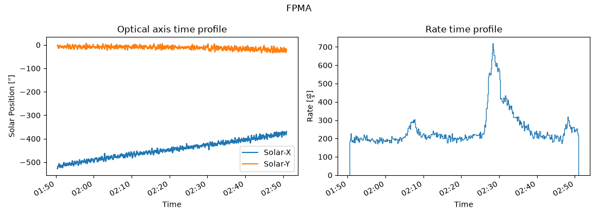
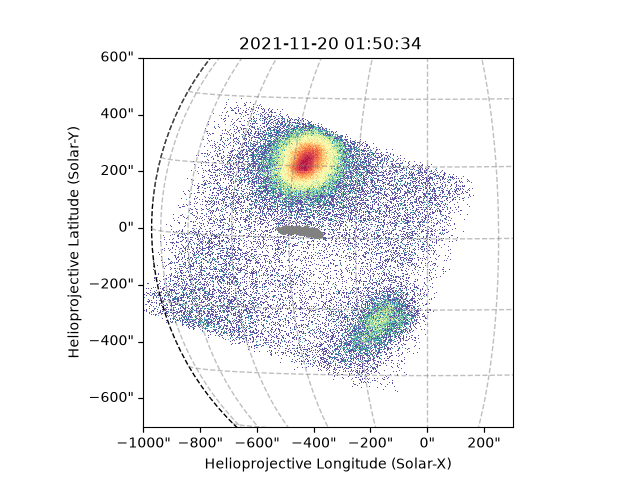
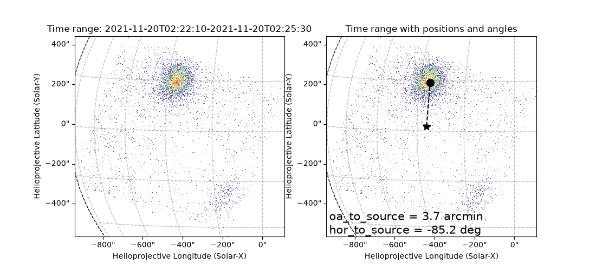
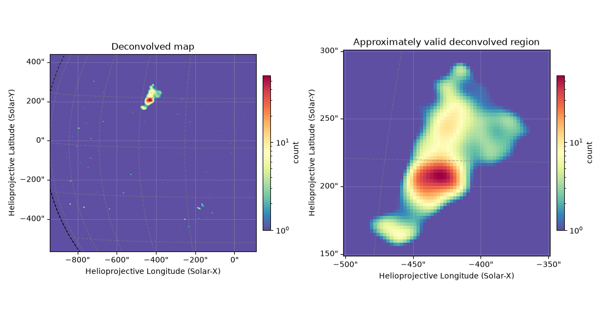
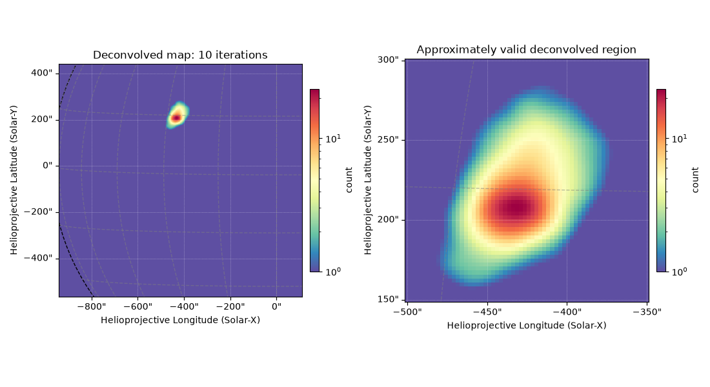

Note
Go to the end to download the full example code.
NuSTAR Optical Axis, Source Location, and Deconvolution
This example shows how to obtain the optical axis information from the NuSTAR files.
This example will also show how to use the optical axis and source location to perform deconvolution correctly on a NuSTAR image.
This is important as the NuSTAR PSF changes both in radius and azimuth from and around the optical axis location.
import ntpath
import os
import urllib.request
import astropy.units as u
import matplotlib.dates as mdates
import matplotlib.pyplot as plt
import numpy as np
from astropy.coordinates import SkyCoord
from astropy.time import Time
from astropy.visualization import time_support
from matplotlib import gridspec
from jdhsrpy import TEST_DATA_LOCATION
from jdhsrpy.general_filters import by_value_range
from jdhsrpy.image_filters import deconvolve_with_file
from jdhsrpy.list_filters import by_time
from jdhsrpy.nustar_core import NustarEvt, draw_grid, get_submap, optical_axis_array
from jdhsrpy.visualize import optical_axis_plot, time_profile_plot
Download an example “sunpos” NuSTAR EVT file.
url = f"{TEST_DATA_LOCATION}/test_nustar_data/nu20619003001A06_cl_sunpos.evt"
filename = os.path.join(os.getcwd(), ntpath.split(url)[1])
if not os.path.isfile(filename):
urllib.request.urlretrieve(url, filename)
url = f"{TEST_DATA_LOCATION}/test_nustar_data/nu20619003001A_fpm.hk"
filename_lvt = os.path.join(os.getcwd(), ntpath.split(url)[1])
if not os.path.isfile(filename_lvt):
urllib.request.urlretrieve(url, filename_lvt)
url = f"{TEST_DATA_LOCATION}/test_nustar_data/nu20619003001A06_cl.evt"
filename_original_evt = os.path.join(os.getcwd(), ntpath.split(url)[1])
if not os.path.isfile(filename_original_evt):
urllib.request.urlretrieve(url, filename_original_evt)
url = f"{TEST_DATA_LOCATION}/test_nustar_data/nu20619003001A_oa.fits"
filename_oa = os.path.join(os.getcwd(), ntpath.split(url)[1])
if not os.path.isfile(filename_oa):
urllib.request.urlretrieve(url, filename_oa)
url = f"{TEST_DATA_LOCATION}/test_nustar_data/nuA2dpsfen1_20100101v001.fits"
filename_psf = os.path.join(os.getcwd(), ntpath.split(url)[1])
if not os.path.isfile(filename_psf):
urllib.request.urlretrieve(url, filename_psf)
Use the class to load in and work with the file.
nustar_object = NustarEvt(evt_filename=filename)
Time profiles
Let’s plot some time profile information first.
We can plot the optical axis locations and the livetime corrected count rate together.
times_oa, sol_x, sol_y = optical_axis_array(filename_oa, filename_original_evt)
times_evt, cts = nustar_object.rate_time_profile_array(filename_lvt)
time_support(format="unix_tai")
fig = plt.figure(figsize=(11, 4))
gs = gridspec.GridSpec(1, 2)
axes0 = fig.add_subplot(gs[0, 0])
optical_axis_plot(times_oa, sol_x, label="Solar-X", axes=axes0)
optical_axis_plot(times_oa, sol_y, label="Solar-Y", axes=axes0)
plt.title("Optical axis time profile")
plt.ylabel(f"Solar Position [{sol_x.unit:latex}]")
plt.xticks(rotation=30, ha="right")
plt.legend()
axes1 = fig.add_subplot(gs[0, 1])
time_profile_plot(times_evt, cts)
plt.title("Rate time profile")
plt.ylabel(f"Rate [{cts.unit:latex}]")
plt.xticks(rotation=30, ha="right")
fmt = mdates.DateFormatter("%H:%M")
for ax in [axes0, axes1]:
ax.set_xlabel("Time")
ax.xaxis.set_major_formatter(fmt)
plt.suptitle(f"FPM{nustar_object.fpm}")
plt.tight_layout()
plt.show()

Image with optical axis
Using the NustarEVT class, we can plot the optical axis location
easily.
# obtain a Sunpy map object of the NuSTAR observation
bottom_left = [-1000, -700] << u.arcsec
top_right = [300, 600] << u.arcsec
m = nustar_object.nustar_map(bottom_left, top_right)
# now use it in plotting, this is now just Sunpy API stuff
fig = plt.figure()
ax = fig.add_subplot(projection=m)
m.plot(axes=ax)
draw_grid(m, ax)
ax.plot_coord(SkyCoord(sol_x, sol_y, frame=m.coordinate_frame), color="grey")
plt.show()

Choosing a time
Let’s choose a time range to work with and look at the optical axis location.
We’ll be able to get a lot of information here, especially the information needed to select the appropriate NuSTAR PSF for a given source and deconvolve correctly.
time0 = "2021-11-20T02:22:10"
time1 = "2021-11-20T02:25:30"
mt = nustar_object.field_of_view_map(
event_data=by_time(nustar_object.cleaned_evt_data, time0, time1)
)
tf_sol_x = by_value_range(
sol_x,
Time(time0, format="isot", scale="utc"),
Time(time1, format="isot", scale="utc"),
array_to_filter_against=times_oa,
)
tf_sol_y = by_value_range(
sol_y,
Time(time0, format="isot", scale="utc"),
Time(time1, format="isot", scale="utc"),
array_to_filter_against=times_oa,
)
Find source location
After choosing the time we want, we can then get a source position which we can do using this Sunpy example.
We can just assume the source will be the brightest pixel in the image.
pixel_pos = np.argwhere(mt.data == mt.data.max()) * u.pixel
hpc_max = mt.wcs.pixel_to_world(pixel_pos[0, 1], pixel_pos[0, 0])
Mean optical axis location
We will also want the mean optical axis position.
mean_tf_sol_x = np.mean(tf_sol_x)
mean_tf_sol_y = np.mean(tf_sol_y)
Get source location w.r.t. optical axis
Now we can use maths or, for you Americans, math to get the angles we need for deconvolution.
deltax, deltay = mean_tf_sol_x - hpc_max.Tx, mean_tf_sol_y - hpc_max.Ty
We want the angular radial distance from the optical axis (OA) to the
source. This is oa_to_source.
This dictates what point-spread function (PSF) to use from the file; either the on-axis (<0.5’) or which off-axis PSF to use (these change in 0.5’ incrememnts up to 8.5’).
oa_to_source = np.sqrt((deltax) ** 2 + (deltay) ** 2) << u.arcmin
Finally, we want the azimuthal angle from the horizontal to the
source. This is hor_to_source.
This angle is used to rotate the PSF from the file so it is in the correct orientation for the desired source location.
hor_to_source = (-np.arctan(deltay / deltax) * 180 / np.pi).value << u.deg
A user will be able to see how crucial these values are, especially when inspecting the that NuSTAR’s PSF elongates with increasing off-axis angles.
See Figure 1 of preprint: Bhattacharya et al. 2025 for the off-axis changes to the PSF.
Plot the result
Plot all this together.
fig = plt.figure(figsize=(11, 5))
gs = gridspec.GridSpec(1, 2)
axes0 = fig.add_subplot(gs[0, 0], projection=mt)
mt.plot(axes=axes0)
draw_grid(mt, axes0)
axes0.set_title(f"Time range: {time0}-{time1}")
axes1 = fig.add_subplot(gs[0, 1], projection=mt)
mt.plot(axes=axes1)
draw_grid(mt, axes1)
axes1.plot_coord(
SkyCoord(
[mean_tf_sol_x, hpc_max.Tx],
[mean_tf_sol_y, hpc_max.Ty],
frame=mt.coordinate_frame,
),
color="black",
linestyle="--",
)
axes1.plot_coord(SkyCoord(tf_sol_x, tf_sol_y, frame=mt.coordinate_frame), color="grey")
axes1.plot_coord(
SkyCoord(mean_tf_sol_x, mean_tf_sol_y, frame=mt.coordinate_frame),
"*",
color="black",
markersize=10,
)
axes1.plot_coord(hpc_max, "o", color="black", markersize=10)
axes1.set_title("Time range with positions and angles")
axes1.text(
5,
5,
f"oa_to_source = {round(oa_to_source, 1)}\nhor_to_source = {round(hor_to_source, 1)}",
size=15,
color="k",
)
plt.show()

Deconvolving
Now we have the numbers require to deconvolve the NuSTAR image.
Note that the full field-of-view should be considered during deconvolution as selecting too-small region will exclude counts that otherwise should be collected by the PSF into a smaller area.
dm = deconvolve_with_file(
mt, filename_psf, oa_to_source=oa_to_source, hor_to_source=hor_to_source
)
sub_dm = get_submap(
dm, bottom_left=[-500, 150] << u.arcsec, top_right=[-350, 300] << u.arcsec
)
fig = plt.figure(figsize=(11, 6))
gs = gridspec.GridSpec(1, 2)
axes0 = fig.add_subplot(gs[0, 0], projection=dm)
dm.plot(axes=axes0, vmin=1e0)
draw_grid(dm, axes0)
axes0.set_title("Deconvolved map")
plt.colorbar(ax=axes0, fraction=0.035, pad=0.03, label=dm.meta["PIXLUNIT"])
axes1 = fig.add_subplot(gs[0, 1], projection=sub_dm)
sub_dm.plot(axes=axes1, vmin=1e0)
draw_grid(sub_dm, axes1)
axes1.set_title("Approximately valid deconvolved region")
plt.colorbar(ax=axes1, fraction=0.035, pad=0.03, label=dm.meta["PIXLUNIT"])
plt.tight_layout()
plt.show()

By default, the number of deconvolution iterations is 100. This can be
changed by passing num_iter to
~jdhsrpy.image_filters.deconvolve_with_file.
Let’s only try 10 iterations.
it10 = 10
dm10 = deconvolve_with_file(
mt,
filename_psf,
oa_to_source=oa_to_source,
hor_to_source=hor_to_source,
num_iter=it10,
)
sub_dm10 = get_submap(
dm10, bottom_left=[-500, 150] << u.arcsec, top_right=[-350, 300] << u.arcsec
)
fig = plt.figure(figsize=(11, 6))
gs = gridspec.GridSpec(1, 2)
axes0 = fig.add_subplot(gs[0, 0], projection=dm10)
dm10.plot(axes=axes0, vmin=1e0)
draw_grid(dm10, axes0)
axes0.set_title(f"Deconvolved map: {it10} iterations")
plt.colorbar(ax=axes0, fraction=0.035, pad=0.03, label=dm10.meta["PIXLUNIT"])
axes1 = fig.add_subplot(gs[0, 1], projection=sub_dm10)
sub_dm10.plot(axes=axes1, vmin=1e0)
draw_grid(sub_dm10, axes1)
axes1.set_title("Approximately valid deconvolved region")
plt.colorbar(ax=axes1, fraction=0.035, pad=0.03, label=dm10.meta["PIXLUNIT"])
plt.tight_layout()
plt.show()

A good question to ask is “how many iterations should I use?” No one really knows the answer to this, and they’re lying if they say they do!
The number of iterations does not have a solid answer but your choice should be justifiable.
Personally, I would try a sample of iteration values and compare the results between both NuSTAR FPMs and what was seen by other observatories.
It also becomes obvious to the eye when you start resolving noise so watch out for that.
Total running time of the script: (0 minutes 40.587 seconds)